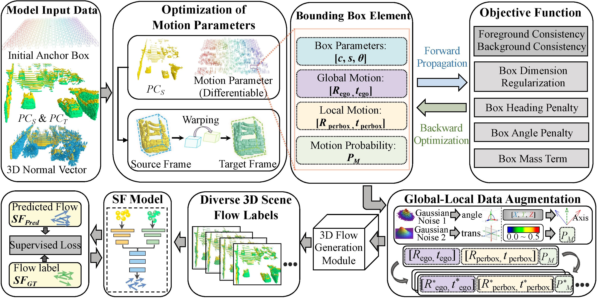
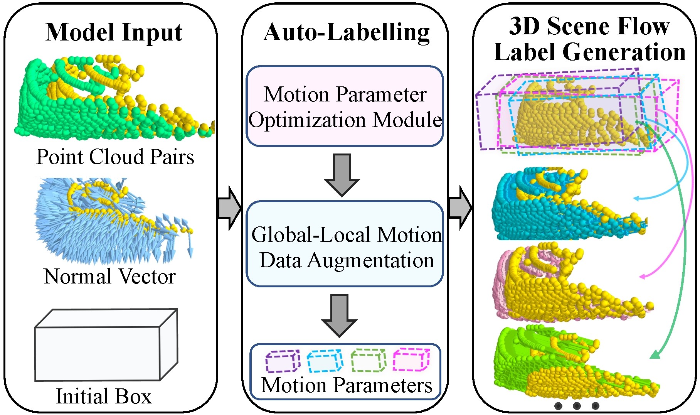
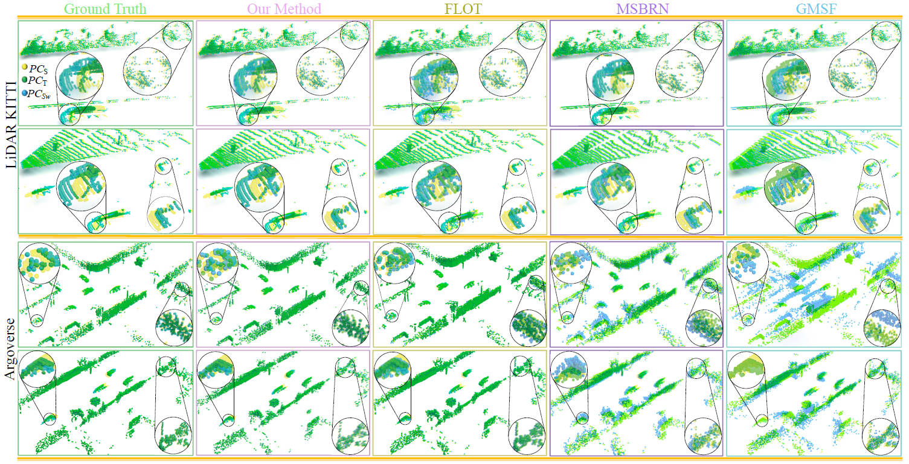

A label-free framework that synthesizes realistic 3D scene-flow labels for raw LiDAR — outperforming every supervised & unsupervised baseline, with a 10× lower EPE3D on LiDAR KITTI.
Learning 3D scene flow from LiDAR point clouds is hard: poor synthetic-to-real generalization, scarce real-world 3D labels, and weak performance on sparse LiDAR. We approach the problem from auto-labelling — generating large amounts of 3D scene-flow pseudo-labels for real LiDAR. Under a rigid-body-motion assumption, multiple anchor boxes with distinct motion attributes decompose the scene into per-object rigid movements. A novel global & local motion augmentation then synthesizes target point clouds from augmented motion parameters, yielding abundant labels highly consistent with real scenes. Across LiDAR KITTI, nuScenes and Argoverse, our method surpasses every prior supervised and unsupervised approach without any manual labelling — cutting EPE3D on LiDAR KITTI tenfold, from 0.190 m to just 0.008 m.
Optimize per-object rigid motion, then augment it into diverse, photorealistic supervision.

3D anchor boxes, a source/target point-cloud pair and their coarse normal vectors enter the optimizer.
Six objective functions inversely tune box, global and local motion parameters into per-object rigid movements.
Global-local augmentation samples K motion sets, synthesizing target clouds and abundant scene-flow labels.

Drag any cloud to rotate — the paired view follows, so you compare the exact same angle. Higher overlap means lower scene-flow error.

Registration results of our method (GMSF+3DSFLabelling) vs. baselines on LiDAR KITTI and Argoverse. The warped source cloud PCsw is dragged onto the target via predicted scene flow; the larger the overlap between PCsw and target PCT, the higher the accuracy. Click to open the full-resolution PDF.
Cameras are synchronized — rotate one view, both follow. Inactive datasets load on demand.
Videos play as they enter view and pause when they leave.
@InProceedings{Jiang_2024_CVPR,
author = {Jiang, Chaokang and Wang, Guangming and Liu, Jiuming and
Wang, Hesheng and Ma, Zhuang and Liu, Zhenqiang and
Liang, Zhujin and Shan, Yi and Du, Dalong},
title = {3DSFLabelling: Boosting 3D Scene Flow Estimation by Pseudo Auto-labelling},
booktitle = {Proceedings of the IEEE/CVF Conference on Computer
Vision and Pattern Recognition (CVPR)},
month = {June},
year = {2024},
pages = {15173-15183}
}